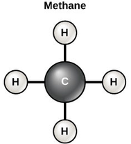

Chưng cất phân đoạn

Image source: Topic 2 image sources
| Vietnamese | Chưng cất phân đoạn / Phân đoạn |
|---|---|
| English | Fractional distillation |
| Pronunciation | /ˈfrækʃənəl ˌdɪstɪˈleɪʃən/ |
| Word type | Noun |
Meaning (Vietnamese)
Phương pháp tách các chất lỏng hòa tan vào nhau, có nhiệt độ sôi khác nhau, bằng cột phân đoạn.
Meaning (English)
A method of separating miscible liquids with different boiling points using a fractionating column.
Example
Fractional distillation separates ethanol and water.
Another definition from the notes
Separating substances based on boiling points (using a fractionating column for miscible liquids).
Source of information: Topic 2 notes (see Sources)